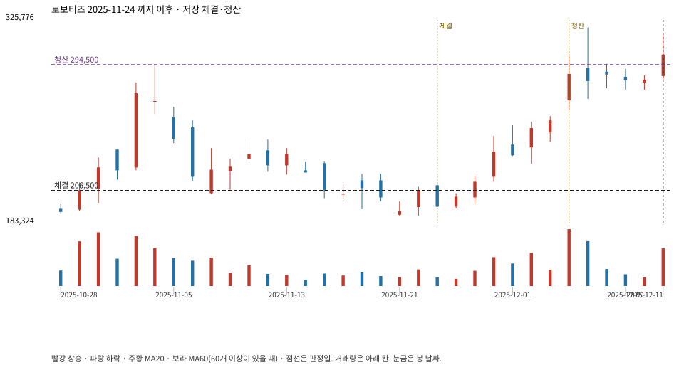

계좌를 다시 돌리지 않았다. 아래는 저장된 주문·체결·청산·비용·손익이다.

{
"case_id": "397b8fa9fc486ab4",
"status": "closed",
"trade": {
"symbol": "108490.KQ",
"signal_date": "2025-11-24",
"quantity": 43,
"entry": 206500,
"stop": 184094,
"target": 294500,
"planned_risk": 984207.6049789983,
"reserved_cash": 8888379.499999998,
"fill": {
"date": "2025-11-25",
"price": 206500,
"fee": 8879.5
},
"exit": {
"date": "2025-12-04",
"price": 294500,
"reason": "target",
"net_pnl": 3762457.000000002,
"ambiguous_bar": false
}
},
"cost": "research fee 10bp each side, slippage 5bp; amounts below are the stored ledger, not a new run",
"chart": "c\/397b8fa9fc486ab4.svg"
}